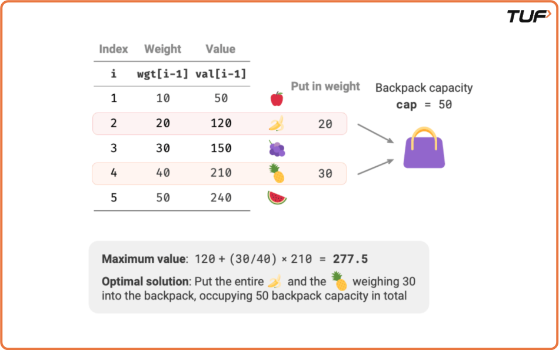

Fractional Knapsack Problem : Greedy Approach
Problem Statement:
The weight of N items and their corresponding values are given. We have to put these items in a knapsack of weight W such that the total value obtained is maximized.
Note: We can either take the item as a whole or break it into smaller units.
Examples
Example 1: Input: val = [60, 100, 120], wt = [10, 20, 30], capacity = 50 Output: 240.000000 Explanation: - Take item 0 (w = 10, v = 60) - Take item 1 (w = 20, v = 100) - Take 2⁄3 of item 2 (w = 20, v = 80) Total value = 60 + 100 + 80 = 240 Example 2: Input: val = [60, 100], wt = [10, 20], capacity = 50 Output: 160.000000 Explanation: Both items fit entirely since total weight 10 + 20 = 30 ≤ 50. Total value = 60 + 100 = 160
Disclaimer: It's highly recommend trying to solve it before looking at the solution.
Approach
Algorithm
- The greedy approach to maximize the answer is to prioritize items with higher values.
- Since items can be broken into smaller units, we focus on selecting items with the highest value-to-weight ratio first.
- To achieve this, sort the items in decreasing order based on their value-to-weight ratio.
- Once sorted, iterate through the items and pick those whose weight is less than or equal to the current capacity of the knapsack.
- If an item's weight exceeds the remaining capacity, break the item into smaller units, calculate its value according to the remaining capacity, and add this value to the total.

Code
#include<bits/stdc++.h>
using namespace std;
// Struct to represent an item with value and weight
struct Item {
int value;
int weight;
};
class Solution {
public:
// Comparator function to sort items by value/weight ratio
bool static comp(Item a, Item b) {
double r1 = (double) a.value / (double) a.weight;
double r2 = (double) b.value / (double) b.weight;
return r1 > r2; // Return true if the ratio of item a is greater than item b
}
// Function to calculate the maximum value we can get with fractional knapsack
double fractionalKnapsack(int W, Item arr[], int n) {
// Sort items based on the value/weight ratio
sort(arr, arr + n, comp);
int curWeight = 0; // Current weight of knapsack
double finalvalue = 0.0; // Final value we can achieve
// Iterate through the sorted items
for (int i = 0; i < n; i++) {
// If the current item can be fully added to the knapsack
if (curWeight + arr[i].weight <= W) {
curWeight += arr[i].weight;
finalvalue += arr[i].value; // Add the full value of the item
} else {
// If the current item can't be fully added, take the fractional part
int remain = W - curWeight;
finalvalue += (arr[i].value / (double) arr[i].weight) * (double) remain;
break; // Break as we have filled the knapsack
}
}
return finalvalue; // Return the maximum value that can be carried
}
};
int main() {
int n = 3, weight = 50; // Number of items and capacity of knapsack
// Item values and weights
Item arr[n] = { {100,20},{60,10},{120,30} };
Solution obj;
// Calculate the maximum value we can get with the fractional knapsack
double ans = obj.fractionalKnapsack(weight, arr, n);
// Output the result
cout << "The maximum value is " << setprecision(2) << fixed << ans;
return 0;
}Complexity Analysis
Time Complexity: O(n log n + n). O(n log n) to sort the items and O(n) to iterate through all the items for calculating the answer.
Space Complexity: O(1), no additional data structure has been used.